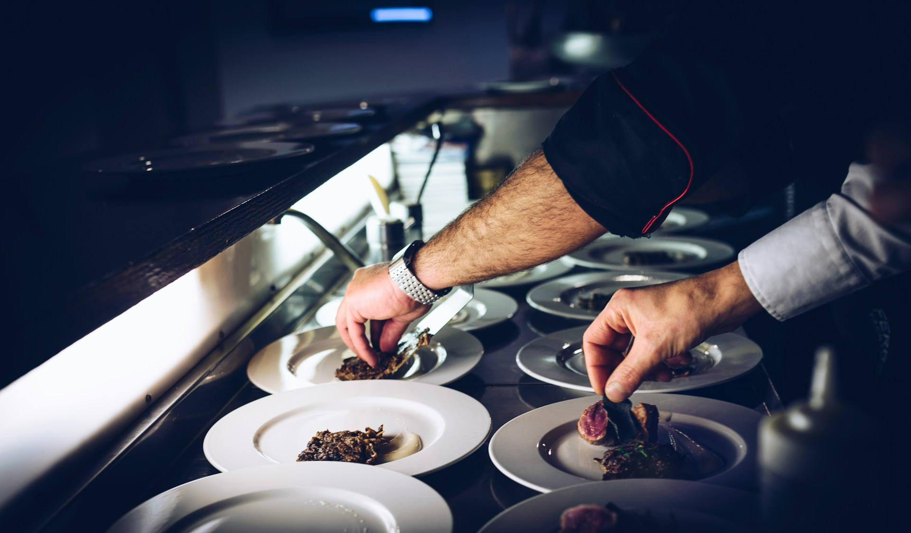
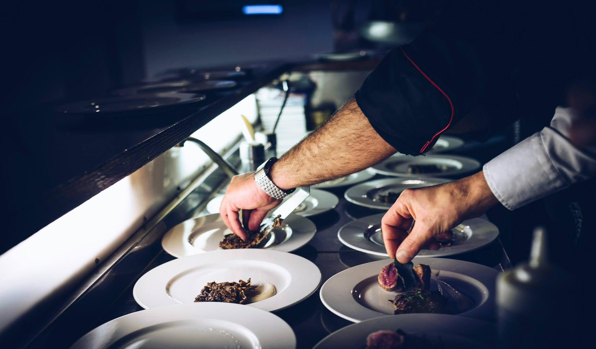

Informasi
Tata Boga adalah ilmu tentang bagaimana teknik untuk menyajikan makanan dengan memperhatikan beberapa faktor yaitu estetika atau keindahan, kualitas rasa masakan, serta nilai kebutuhan gizinya.
Kimia Pangan
Kimia pangan adalah proses kimia dan interaksinya dengan komponen biologis dan non-biologis dalam bahan pangan
Mikrobiologi Pangan
Mikrobiologi pangan adalah ilmu yang mempelajari mikroorganisme yang ada pada makanan, bagaimana mereka memengaruhinya, dan bagaimana memanfaatkannya
Akuntansi
Sistem atau proses yang mencatat, mengelompokkan, meringkas, menganalisis, dan menyajikan informasi keuangan suatu entitas
Competency Based Training
Kegiatan Competency Based Training (CBT) bertujuan untuk menumbuhkembangkan karakter dan etos kerja (disiplin, tanggung jawab, jujur, kerjasama, kepemimpinan, dan lain-lain) yang dibutuhkan DU/DI serta meningkatkan kualitas hasil pembelajaran. Kegiatan CBT Rekayasa Perangkat Lunak meliputi kegiatan dimulai dari mencari proyek baik dari internal/eksternal sekolah, mengidentifikasi kebutuhan pemberi proyek (requirements), melakukan desain proyek (design), melakukan implementasi (coding), dan melakukan pengujian proyek (testing).
Tata Boga Gallery
This is Tata Boga Gallery


 



Sejarah tata boga
Tata boga mulai berkembang sebagai disiplin ilmu pada era Hindia Belanda. Di abad ke-19 Masehi, para juru masak bertugas untuk menyiapkan makanan untuk para pejabat belanda dan pembesar lokal, di mana hidangan yang disajikan dinamakan boga hindia (Indische Keuken). Tata boga merupakan ilmu yang mempelajari teknik menyajikan makanan dengan memperhatikan estetika, rasa, dan nilai gizinya. Di Indonesia, tata boga dapat dipelajari di Sekolah Menengah Kejuruan (SMK) atau di tingkat sekolah tinggi terkait industri pariwisata dan industri perhotelan.
kontak kami
login